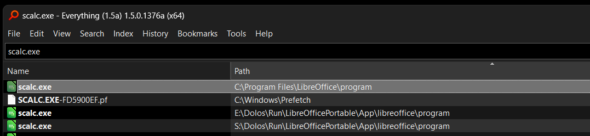
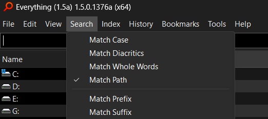

Everything Launcher
Posted on 2024-02-23 in Code
Accidentally using a search tool as a launcher
Long before PowerToys Run was a thing I accidentally began using the search program Everything by Voidtools as a launcher... and it worked out so well I'm not going to stop any time soon.
If you don't know about Everything, it's a lightning-fast search utility that instantly became one of the first tools I install on any new system after I discovered it (I think through its inclusion on ninite.com). Despite the great improvements to the built-in Windows search in the past decade it still can't touch the performance of good third-party tools, and the desire to have quality search at my fingertips lead me to tie opening the Everything utility to the shortcut Ctrl+Win+A using an AutoHotKeys macro. After that, I found myself naturally using it to locate and run programs.

Since Everything is so handy and can locate bat scripts, portable executables, and other odd apps & utilities that I store in unconventional locations instantly it functions as the best launcher I've ever used - and without barely any configuration or customization. I'd strongly recommend trying it - fantastic as a search tool, and if you like to keep you hands on the keyboard and have rapid access to all programs/scripts on your system (wherever they may be) it could work great as a launcher for you, too.
Install Everything using WinGet by running
winget install -e --id voidtools.Everything
Download installer/portable version at https://www.voidtools.com/downloads/
I'd recommend the Alpha 1.5 version (mainly due to the addition of a dark theme)...
WinGet install:
winget install -e --id=voidtools.Everything.Alpha
Download installer/portable version at https://www.voidtools.com/everything-1.5a/
Learn about the search operators at https://www.voidtools.com/support/everything/searching/
The default settings are decent - The only areas I'd recommend reviewing at the outset are what drives are being indexed under Tools > Options > Indexes, and enabling searching the entire path of a file under Search > Match Path.

Walk on,
Bitpusher
\`._,'/
(_- -_)
\o/